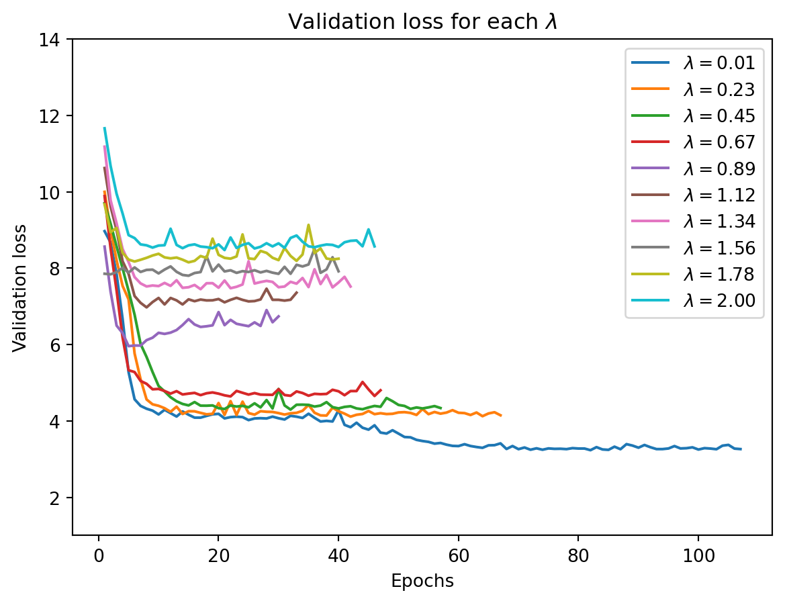
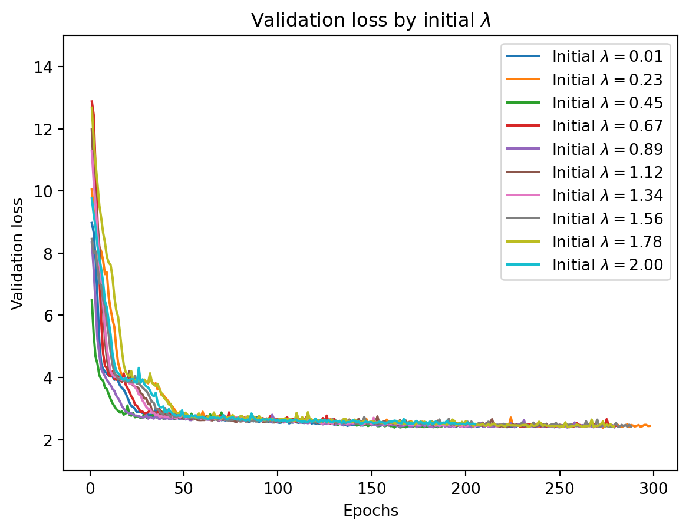
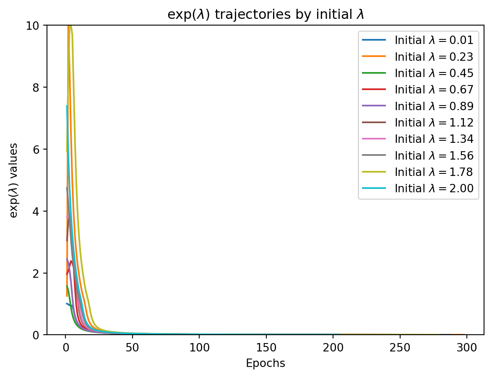

Hyperparameter optimization is a critical aspect of machine learning. When optimizing hyperparameters, our objective is to discover the ideal configuration of hyperparameters for a given model. While standard parameters are adjusted during the training process based on data, hyperparameters, such as learning rates or regularization terms, are set prior to the learning phase.
The standard technique for hyperparameter optimization (HO) is grid search where every possible combination of hyperparameters is tested. Because of the vast potential combinations of hyperparameters, random search, where a random subset of hyperparameters is used, is often attempted. The problem with either of these techniques is that they require you to train multiple models that will later be discarded (Mlodozeniec, Reisser, and Louizos 2023, 1). Moreover, neither of these methods are scalable to cases with many hyperparameters (Lorraine, Vicol, and Duvenaud 2020; Maclaurin, Duvenaud, and Adams 2015)
It would be preferable if we could update hyperparameters in the same way we update model parameters, i.e., through the use of gradient-based methods. Ideally, we would calculate the derivative of the loss function with respect to each hyperparameter and then update the hyperparameters, i.e.:
Luckily, there have been a variety of papers published proposing gradient-based methods to update hyperparameters. In this post, I will apply the gradient-based HO outline from Lorraine, Vicol, and Duvenaud (2020) to a simple neural network with a single weight decay hyperparameter. I thought this would be a good test case to get more familiar with PyTorch, which makes much of the computation extremely easy and efficient.
Gradient Computation
The first hurdle to overcome in gradient-based HO is the fact that you cannot optimize hyperparameters with respect to the same loss function you use for the parameters. For example, optimizing the training loss with respect to the weight decay penalty would always lead to preferring models with no penalization (Pedregosa 2016). Instead, we use a validation set and consider HO as a two-level optimization problem, as in Pedregosa (2016) and Lorraine, Vicol, and Duvenaud (2020).
Let \(\mathcal{L}_T\) and \(\mathcal{L}_V\) be the training and validation loss, respectively. Both of these depend on the hyperparameters \(\boldsymbol\lambda\) and model parameters \(\mathbf{w}\), whether directly or indirectly (more on this later). First, we train the model and update the model parameters for a given value of \(\boldsymbol\lambda\). Then we update the hyperparameters:
Our second hurdle is that the validation loss can depend on the hyperparameters both directly but also indirectly through the optimal weights \(w^\ast\). In our example of weight decay, the validation loss does not directly depend on the \(l_2\) penalty, only indirectly through the optimal parameters. We have to calculate how the optimal weights change as the hyperparameters change (Lorraine, Vicol, and Duvenaud 2020).
Following (Lorraine, Vicol, and Duvenaud 2020), the training loss is an implicit function of \(\boldsymbol\lambda\). Under certain regularity conditions, the optimal values of the parameters are given by the following equation (implicitly a function of \(\boldsymbol{\lambda}\)):
Assuming that the inverse of \(\dfrac{\partial^2 \mathcal{L}_T}{\partial \mathbf{w}\partial \mathbf{w}^T}\) exists, we can substitute the implicit equation in as:
So, by placing regularity conditions on the training loss, we can now calculate the gradient of the validation loss with respect to the hyperparameters and use that to iteratively update these hyperparameters.
Computation
The issue now is purely computational: how can we quickly calculate the Hessian matrix and its inverse in the above equation. (Pedregosa 2016) suggests using the conjugate gradient method to find:
This can be done without ever actually instantiating the Hessian matrix; it only requires a Hessian vector product, which is easy to calculate in PyTorch.
They propose a clever algorithm that calculates the terms of this series recursively and does not require instantiating the second derivative matrix, only the vector-Hessian products.
This is simple to implement in PyTorch because of the ease in calculating vector-Jacobian products. Here is an example where we calculate the Hessian inverse of:
\[
x_1^3 + x_2^3, \quad x_1 = x_2 = 0.1
\]
import torchfrom torch.autograd.functional import hessiandef f(x):return x.pow(3).sum()def neumann_series(v, f, I=50): v = v.detach().clone() p = v.detach().clone()for i inrange(I): tmp_v = torch.autograd.grad(f, inputs, grad_outputs=v, retain_graph=True) tmp_v = torch.cat([grad.view(-1) for grad in tmp_v]) v = v - tmp_v p = p + vreturn pv = torch.tensor([1, 1], dtype=torch.float32)inputs = torch.tensor([0.1, 0.1], requires_grad=True)hess = hessian(f, inputs)invhess = torch.linalg.inv(hess)y = f(inputs)grad_y = torch.autograd.grad(y, inputs, create_graph=True)neumann_approx = neumann_series(v = v, f = grad_y, I =50)torch.isclose(v @ invhess, neumann_approx)
tensor([True, True])
A sufficient condition for the Neumann series to converge is that the spectral radius (maximum of the eigenvalues) is less than 1. While the above code works, in practice most of the contrived neural network examples I created in Pytorch did not satisfy this sufficient condition and the Neumann series rarely converged. As a result, I decided to stick with the conjugate gradient method.
Results
The full code can be found in the Github repository. The actual model parameters are updated using Adam while the hyperparamters are optimized using usual gradient descent. Because the \(\lambda\) hyperparameters cannot be negative, we transform the \(l_2\) penalty to \(\exp(\lambda)\). This poses no problem to the computation, as the exponentiation is added to the computational graph in PyTorch.
Figure 1 shows the validation error from grid search HO. We see that minimal regularization is favored.
for i, val_losses inenumerate(all_val_losses): plt.plot(range(1, len(val_losses) +1), val_losses, label=f"$\lambda={lambdas[i]:.2f}$")plt.xlabel('Epochs')plt.ylabel('Validation loss')plt.title(r"Validation loss for each $\lambda$")plt.ylim([1, 14])plt.legend()plt.show()

Figure 1: Validation error trajectory by lambda
By contrast, Figure 2 shows the validation error trajectory by initial lambda use the gradient-based method. We see that, no matter the initial \(\lambda\), the validation error rapidly converges to the low validation error trajectory.
for i, val_losses inenumerate(ho_val_losses): plt.plot(range(1, len(val_losses) +1), val_losses, label=f"Initial $\lambda={lambdas[i]:.2f}$")plt.xlabel('Epochs')plt.ylabel('Validation loss')plt.title(r"Validation loss by initial $\lambda$")plt.ylim([1, 15])plt.legend()plt.show()

Figure 2: Validation error trajectory by lambda
for i, l2_vals inenumerate(all_l2s): plt.plot(range(1, len(l2_vals) +1), np.exp(l2_vals), label=f"Initial $\lambda={lambdas[i]:.2f}$")plt.xlabel('Epochs')plt.ylabel(r"$\exp(\lambda)$ values")plt.title(r"$\exp(\lambda)$ trajectories by initial $\lambda$")plt.ylim([0, 10])plt.legend()plt.show()

Figure 3: Lambda trajectory
In Figure 3, we can see how the \(l_2\) penalty changes over the epochs. The rapid convergence of \(\lambda\) to the low \(\lambda\) values (and the consequent drop in the validation error) is striking. The actual (Pedregosa 2016) has a complex set of tolerances that vary over update epochs to ensure theoretical convergence of the HO algorithm as a whole. Even without that, it performs well with fixed tolerances.
Drawbacks
The main drawback to this methodology is that it requires the Hessian to be invertible, even if you don’t have to calculate it exactly. In practice, the Hessian is rarely invertible in deep learning problems (Sagun, Bottou, and LeCun 2016). In addition, the conjugate gradient descent method I use is also rather slow; the HO gradient method took about 10 minutes to run. Despite that, I think this method has real advantages as it can converge to the correct \(\lambda\). Grid search, by contrast, will never find this \(\lambda\) unless it is part of the set of considered hyperparameters.
References
Lorraine, Jonathan, Paul Vicol, and David Duvenaud. 2020. “Optimizing Millions of Hyperparameters by Implicit Differentiation.” In International Conference on Artificial Intelligence and Statistics, 1540–52. PMLR.
Maclaurin, Dougal, David Duvenaud, and Ryan Adams. 2015. “Gradient-Based Hyperparameter Optimization Through Reversible Learning.” In International Conference on Machine Learning, 2113–22. PMLR.
Mlodozeniec, Bruno, Matthias Reisser, and Christos Louizos. 2023. “Hyperparameter Optimization Through Neural Network Partitioning.”arXiv Preprint arXiv:2304.14766.
Pedregosa, Fabian. 2016. “Hyperparameter Optimization with Approximate Gradient.” In International Conference on Machine Learning, 737–46. PMLR.
Sagun, Levent, Leon Bottou, and Yann LeCun. 2016. “Eigenvalues of the Hessian in Deep Learning: Singularity and Beyond.”arXiv Preprint arXiv:1611.07476.